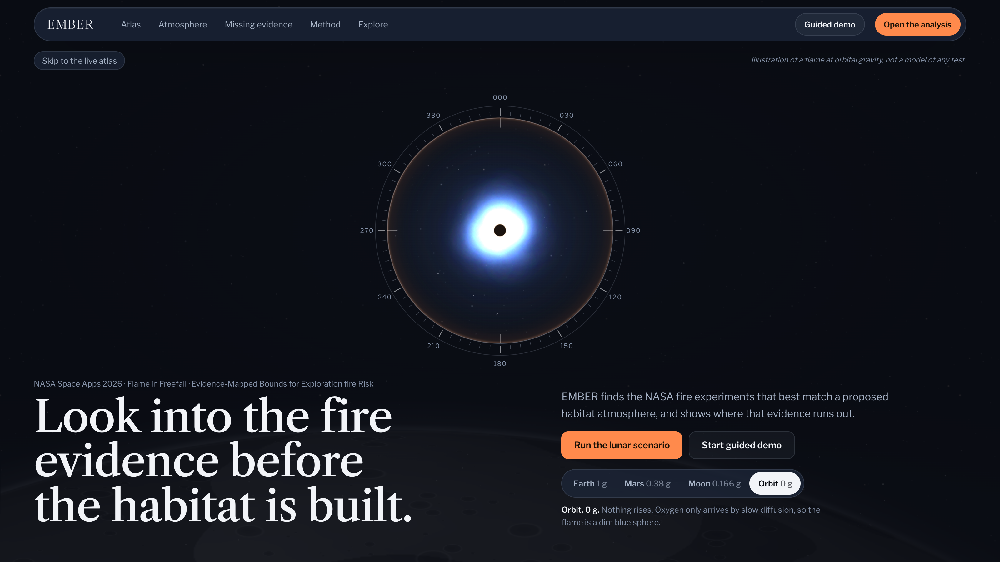
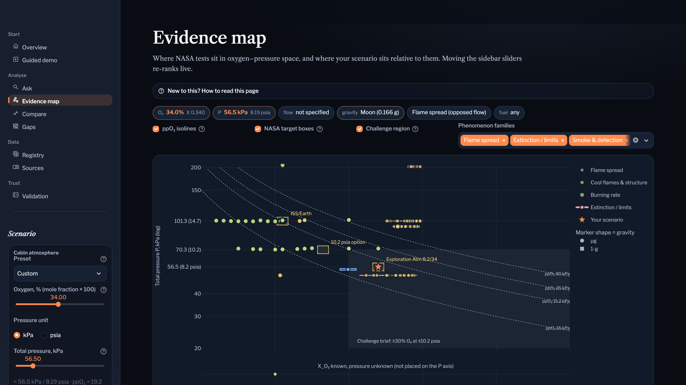
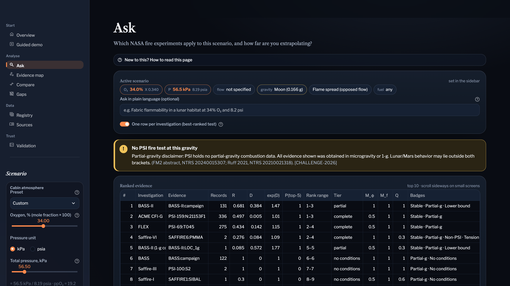
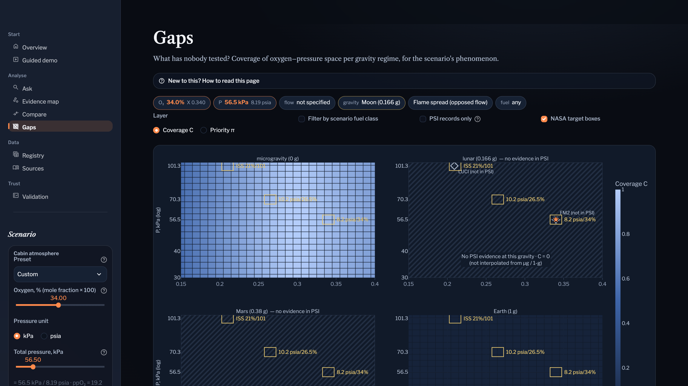

EMBER
01
/ 07
NASA Space Apps 2026 · Challenge: Flame in Freefall
EMBER
Evidence-Mapped Bounds for Exploration fire Risk
Team TEAM NAME
Member One · Member Two · Member Three

The app's opening view: a flame illustrated at orbital gravity
Space Apps 2026 · Flame in Freefall
Slides made with AI assistance (Claude) · screenshots are of the real app
EMBER
02
/ 07
The problem
Moon habitats will breathe
richer, thinner
air.
ISS today
21
% O₂
101 kPa · 14.7 psia
→
Proposed exploration atmosphere
34
% O₂
56.5 kPa · 8.2 psia
Fire spreads differently in that air, and at 1/6 g. Which of NASA's fire tests still apply? · Atmosphere: NASA-TP-2010-216134
Space Apps 2026 · Flame in Freefall
Slides made with AI assistance (Claude) · screenshots are of the real app
EMBER
03
/ 07
NASA data makes it possible
982
evidence records
from
11
NASA fire investigations in Physical Science Informatics
19
cited sources: PSI tables, NTRS reports, NASA-TP-2010-216134
Every value traced to a table row or a page. Nothing filled in.

Evidence map.
Every NASA test in oxygen–pressure space. The orange star is the lunar habitat; gold boxes are NASA's target atmospheres.
Space Apps 2026 · Flame in Freefall
Slides made with AI assistance (Claude) · screenshots are of the real app
EMBER
04
/ 07
The user experience
Describe a habitat. See which experiments apply,
and how far you're stretching them.

Read it like this
D
is the distance from your atmosphere to each test, weighted by NASA's published flame-spread exponents (Ruff 2021).
Lower bound
means some conditions were never reported. EMBER leaves them unknown instead of guessing.
No PSI fire test at this gravity
: the warning appears on every lunar result.
Space Apps 2026 · Flame in Freefall
Slides made with AI assistance (Claude) · screenshots are of the real app
EMBER
05
/ 07
What nobody has tested
No fire data at
lunar or Mars gravity.

Left:
microgravity, well covered by ISS tests.
Right:
lunar gravity, empty in PSI. EMBER does not interpolate across that gap; it shows it.
Space Apps 2026 · Flame in Freefall
Slides made with AI assistance (Claude) · screenshots are of the real app
EMBER
06
/ 07
Why you can trust it
Built to say
“unknown”
, never to guess.
5
of 5
trick prompts handled
“Is Nomex safe at 34% O₂?” is refused. EMBER never calls anything safe.
8
of 8
hostile sentences dropped
Invented numbers and fake citations fail the cite-or-drop check.
1,000
re-rankings, weights shaken
The same five experiments stay in the top five.
0
of 12
false “comparable” verdicts
Compare lists every confounder before it answers.
Retrieval benchmark: built, waiting for two human labellers. Shown as pending, not self-graded.
Space Apps 2026 · Flame in Freefall
Slides made with AI assistance (Claude) · screenshots are of the real app
EMBER
07
/ 07
The future
Aim the next fire experiments
here.
Fly burns at lunar and Mars gravity
at NASA's target atmospheres
Add LUCI and FM2 partial-gravity results as they are published
Score the benchmark with human relevance labels
Code:
github.com/your-team/ember
· runs fully offline
Lunar gravity, 0.166 g. The star is the proposed habitat atmosphere, with no PSI fire test anywhere around it.
Space Apps 2026 · Flame in Freefall
Slides made with AI assistance (Claude) · screenshots are of the real app